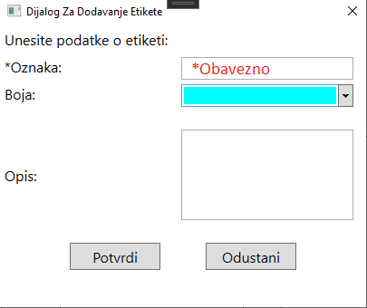
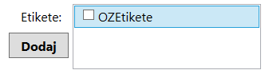

Kreiranje etikete
Prilikom kreiranja nove etikete, neophodno je da popunite:
- Oznaku etikete (mora biti jedinstvena među etiketama)
a polja koja nije obavezno popuniti su:
- Opis etikete
- Boja etikete,
Zatim je potrebno da kliknete na dugme Potvrdi i etiketa je kreirana.

Kreirana etiketa će se naći u listi etiketa koje je moguće pridružiti događaju.

Povratak na početnu stranicu